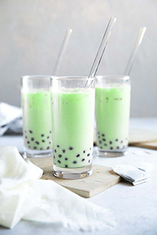
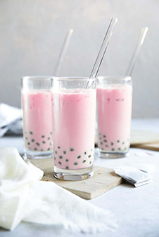
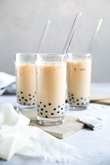
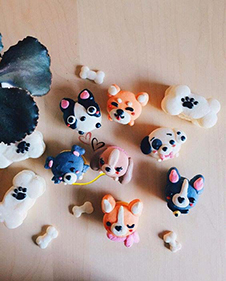
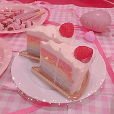
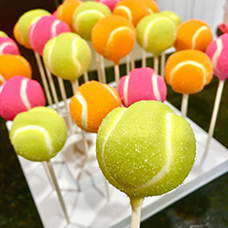
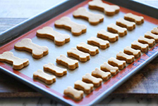
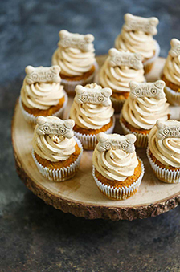
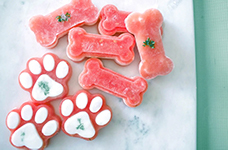
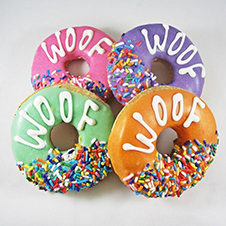

Menu
Boba Tea
Honeydew Bubble Tea
Honeydew Melon, Black Tapioca Pearls, Green Tea, Soy Milk, Agave syrup
Sizes: Pupper(small), Doggo(medium), Woofer(large)
Rose Bubble Tea
Peach, Raspberry, White Tea, Soy Milk, Aloe Vera
Sizes: Pupper(small), Doggo(medium), Woofer(large)
Classic Milk Bubble Tea
A combination of black tea, milk, sweetened to what you like, and tapioca pearls.
Sizes: Pupper(small), Doggo(medium), Woofer(large)
Taro Milk Bubble Tea
Taro, Black Tapioca Pearls, Jasmine Tea, Soy Milk, Agave Syrup
Sizes: Pupper(small), Doggo(medium), Woofer(large)

Baked Goods
Pupparron Macarons
Macarons made with sugar, flour, pinch of salt and egg whites
Rainbow Cake Slices
Cake flavor: yellow cake with every color in the rainbow Icing flavor: Buttercream topped with a strawberry
Boba Tea Cupcakes
Vanilla and chocolate cake coated in vanilla icing
Cake Pups
Milk Tea Cupcakes, Filled with brown sugar boba, and topped with buttercream frosting and more boba.
Dog Treats
Peanut Butter Bones
Homemade dog biscuits made with pumpkin puree, peanut butter, eggs, and flour
PB Pumpkin Pupcakes
Made with whole wheat flour, oats, baking powder, pumpkin puree and unsweetened applesauce. Topped with peanut butter “frosting”.
Water Paws
seedless watermelon, greek yogurt, chopped parsley
Doggie Donuts
Donut Flavor: Mango, Green Apple, peaches, blueberries, raspberry Coating: Yogurt and human-grade nonpareil balls. Ingredients: Ingredients: Mango, Green Apple, Peaches, Blueberries, Raspberry, Whole Wheat Flour, White Flour, Yeast, and Oats.
